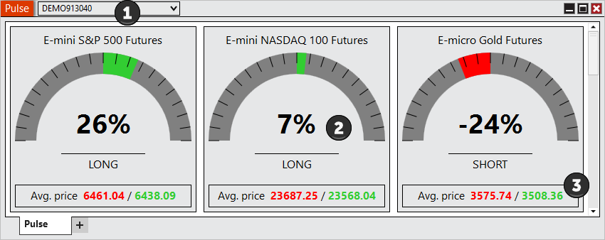
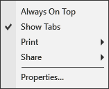

|
<< Click to Display Table of Contents >> Using the Pulse Window |


|
Using the Pulse Window
|
<< Click to Display Table of Contents >> Using the Pulse Window |
|
 Enabling and disabling Instruments
Enabling and disabling Instruments
Instruments can be enabled and disabled within the Properties section of the Pulse window.
For more Information on instrument selection and management please see Pulse Properties section of the Help Guide. |
 Understanding the layout of the Pulse window
Understanding the layout of the Pulse window

Account SelectorClicking the Account Selector will display a drop down with all available accounts. Pulse will display the sentiment for the environment of the account selected. Selecting a live account will show live sentiment. Select simulation account will show simulation sentiment. GaugeThe gauges will show the market sentiment. A basic overview of its calculations is (Sum of Net Long Positions - Sum of Net Short Positions)/Sum of All Net Positions.Positive percentages with a green gauge indicate a long sentiment. Negative percentages with a red gauge indicate a short sentiment. Average PriceThe Average Price section displays the average entry price for short positions in red and long positions in green. Right Click MenuRight mouse click on the Pulse window to access the right click menu. 
|
The Pulse window is a tabbed interface, this gives you the ability to have multiple Pulse tabs configured in the same window. Please see the Using Tabs section of the help guide for more information. |